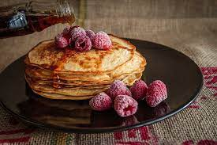

Vegan Pancakes

Learn how to make the most delicious vegan pancakes below!
Ingredients
- 1 ¼ cups all-purpose flour
- 2 tablespoons white sugar
- 2 teaspoons baking powder
- ½ teaspoon salt
- 1 ¼ cups water
- 1 tablespoon oil
Steps
- Sift flour, sugar, baking powder, and salt into a large bowl; make a well in the center. Whisk together water and oil in a small bowl.
- Pour oil and water into flour mixture.
- Stir just until blended; mixture will be lumpy.
- Heat a lightly oiled griddle over medium-high heat.
- Drop batter by large spoonfuls onto the griddle. Cook until bubbles form and edges are dry. Flip, then cook until bottoms are browned, 1 to 2 minutes. Repeat with remaining batter.
- Serve with berries.